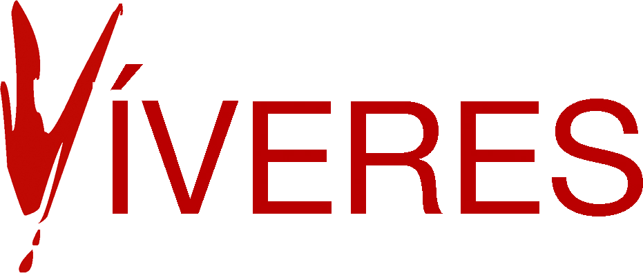

Serie fotográfica por Andrea Guedella
Autorretratos intervenidos. Un cuerpo de obra, capaz de comerse a sí mismo.
 Cerda
Cerda
Serie fotográfica por Andrea Guedella
Autorretratos intervenidos. Un cuerpo de obra, capaz de comerse a sí mismo.
CerdaLa serie
Desde niña, tenía fantasías sobre temas serios. Imaginaba que en cualquier situación de restricción extrema, emergencia, guerra, abandono o pobreza, yo no moriría. Sobre todo, no moriría de hambre porque recurriría a mí misma.
Algo muy primitivo, de naturaleza antropofágica, que lejos de asustarme, lo aceptaba con la naturalidad de una niña. Con el paso del tiempo, la realidad, el cambio climático, la pandemia, las guerras y tanta miseria esos sentimientos y recuerdos regresaron.
Decidí capturarlos con mi cámara. Explorarlos con mi cuerpo. Preparé mis víveres: autorretratos intervenidos. Transformaciones de mi cuerpo en alimento, en material de consumo. Tratar el cuerpo como objeto fotográfico y sujeto necesario para existir, resistir y sobrevivir. Ya que sin él, no hay vida.
«Víveres» resulta un plato fuerte. Sazonado con una pizca de humor negro. Un cuerpo de obra, capaz de comerse a sí mismo.
Me pregunto también, ¿somos lo que comemos?
Andrea Guedella
La carta
Tocá un plato para verlo. Cada imagen es un autorretrato intervenido.
Contacto
Escribile a Andrea para llevar «Víveres» a una sala, una publicación o tu colección.
Víveres · Andrea Guedella